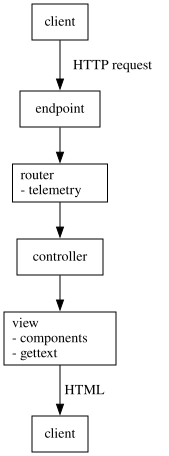

How to start an application in app/ ?
- interactive session:
iex -S mix phx.server - not interactive session:
mix phx.server
Where to get help?
- IRC
- Discord
- Elixir Forum
- Stack Overflow
- Web Application Security Best Practices for BEAM languages
A package to use databases?
Ecto
A package to use HTTP connections?
Plug
A package to code?
ExUnit
A package for internationalization and localization?
Gettext
A package to use emails?
Swoosh
A package to use HTML?
Phoenix HTML
A package to build pub/sub systems?
Phoenix PubSub
What is a directory structure built by mix phx.new?
What is _build?
It holds all compilation artifacts.
What is assets?
This directory contains the front end code e.g. JavaScript and CSS.
What is config?
This directory contains all the configuration data of the application.
What is deps?
This directory contains all dependencies installed by mix.
What is lib?
lib contains the application source code.
What is priv?
This directory holds data that is necessary in production but are not source code — e.g. priv/static can contain images, priv/static/assets contains generated from files in assets.
What is test?
This directory contains tests and usually mirrors lib.
Given an application named hello, what is lib/hello?
This directory contains:
application.exdefines an Elixir application, in particular, how to start it. Starting the application means starting a number of processes in order. These are defined and started instart/2.mailer.exdefines a module to send emails.repo.exdefines a module to interact with a DB
Given an application named hello, what is lib/hello_web?
It gives an implementation to this actor computation.

Main steps to add a new page?
- Add a new route that points to a controller — e.g.
/hellopoints toHelloController. - Add the new controller and make its view — e.g.
HelloHTML
What is a Plug
?
- It is a function
: Plug.Conn Options → Plug.Conn
It is a module m.init : Options → Optionsm.call : Plug.Conn Options → Plug.Conn
m such that:
How to use a Plug?
In the context where plug is defined:
Where to use plugs?
- endpoint
- router
- controller
What is halt(conn)?
It tells that the next plug will not be called.
What is a route? How to list all routes?
- A route is:
Verb x Path x Action mix phx.routes
What is a Resource?
- A resource is a type of data that a client can interact with using a given set of HTTP requests.
- For a resource
user, the set of requests is:GET /users HelloWeb.UserController :index GET /users/:id/edit HelloWeb.UserController :edit GET /users/new HelloWeb.UserController :new GET /users/:id HelloWeb.UserController :show POST /users HelloWeb.UserController :create PATCH /users/:id HelloWeb.UserController :update PUT /users/:id HelloWeb.UserController :update DELETE /users/:id HelloWeb.UserController :delete
How to build a resource named users?
- Using
resource usersunder a given scope in the router. - Generated routes may be selected using the option
only: [:index, :show] - Or
except: [:delete] - Resources may be nested.
If a route needs to be tested, how to make sure that it is considered by the router?
By using :verified_routes.
This code will check routes against the router's routes at compile time.
If a resource needs a client API and an admin API, how to expose both APIs?
By using scopes. For instance:
Which gives:
- What is a pipeline?
- How to build a pipeline?
- How to use a pipeline?
- A pipeline is a plug built by composing plugs — i.e.
p = p1 |> p2 … - To build a pipeline, one may use:
pipeline :browser do plug :accepts, ["html"] … plug :put_secure_browser_headers end - The pipeline may be used within a scope:
scope "/reviews", HelloWeb do pipe_through [:browser, :auth] resources "/", ReviewController end
Give an example of scope and pipeline usage.
- An anonymous user can read the list of reviews.
- An anonymous user can read a review.
- An authentified user can create a review.
How to forward requests to an other plug?
By using the forward macro.
- What is a Controller?
- How to build a Controller?
- How to use a Controller?
- A controller gives meaning to a request — i.e. an HTTP request may be viewed as a message received from the client and the controller is the computation that follows.
- A controller function is called an
action. - To build a Controller for a given application
hello, it is enough to define a module:defmodule HelloWeb.PageController do use HelloWeb, :controller … end - To use a controller, it is enough to connect a route to one of its actions.
What are standard actions names?
- index - renders a list of all items of the given resource type
- show - renders an individual item by ID
- new - renders a form for creating a new item
- create - receives parameters for one new item and saves it in a data store
- edit - retrieves an individual item by ID and displays it in a form for editing
- update - receives parameters for one edited item and saves the item to a data store
- delete - receives an ID for an item to be deleted and deletes it from a data store
Give an example of a Controller.
What types of output an Action may have?
text(conn, …)json(conn, …)conn |> assign(:messenger, messenger) |> render(:show)
Using render implies that a show templates exists and an associated view module.
Which formats are taken care of by a view?
- Any format will do as more may be added.
- JSON views are already ready to be used.
- Check the MIME library for specifics.
How to send a response directly?
- By using
send_resp/3. - And
put_resp_content_type/2 - and
put_status/2
Why and how to implement a re-direction?
For instance, if a user sends data to build a resource, he should then be re-directed to an other
page. Using the redirect/2 function.
Why and how to use a Flash message?
Flash messages are short transient messages presented to the user. A flash message may be used to inform him about the status of an action.
- Why are
function component
needed? - How to build a function component?
- How to use a function component?
- A recurring pattern is to assign values to variables into templates in order to build HTML fragments.
- Composing these framents build an HTML page.
- To build a function component, it is enough to define a function
Assigns → HEExusinguse Phoenix.Component.
- Why are
HEEx
templates needed? - How to build an HEEx template?
- How to use an HEEx template?
- HTML needs to be generated from assigns.
- HTML is static, so a DSL that augments HTML with programming constructs is built: HEEx.
- To build an HEEx template, it is enough to use
<%= … %>,<% … %>,@…and save the result as an otherwise HTML document/fragment in a.heexfile. - To use it, it may be included as part of a view using
embed_templates/1so that it is turned into a function component. - HTML extensions may be used, for instance:
Hello <%= @username %>
Hello <%= @username %>
Why a root and an app layouts?
- The root layout hardly changes.
- There is a concept of LiveView which do not change root layouts but app layouts.